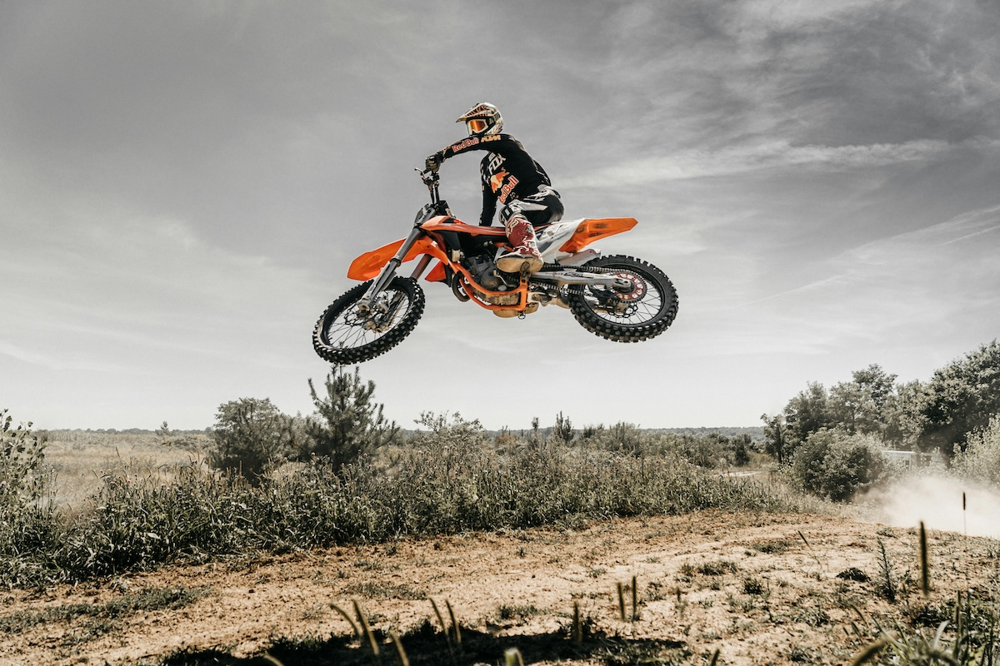

Fotoğrafçılıkta Sürücü Modları: Çekim Deneyiminizi Geliştirin
Fotoğrafçılıkta sürücü modları, deklanşöre bastığınızda makinenizin nasıl tepki vereceğini belirleyen önemli bir ayardır. Doğru sürücü modunu seçmek, çekim yaptığınız sahneye göre fotoğraf kalitenizi artırabilir ve çekim sürecinizi daha verimli hale getirebilir. Bu yazıda, sürücü modlarının ne olduğunu, farklı çekim senaryolarında nasıl kullanılması gerektiğini ve en iyi sonuçları almak için ipuçlarını inceleyeceğiz.
Sürücü Modları Nelerdir?
Çoğu fotoğraf makinesinde bulunan temel sürücü modları şunlardır:
1. Tek Çekim (Single Shot / Single Frame / S)
Deklanşöre bastığınızda sadece tek bir kare çekilir. Manzara, mimari veya portre çekimlerinde idealdir çünkü her kareyi dikkatlice çerçeveleyerek çekim yapmanızı sağlar. Ayrıca, düşük ışık koşullarında tripodla çekim yaparken de en iyi seçeneklerden biridir.
2. Sürekli Çekim (Continuous / Burst / C)
Deklanşöre basılı tuttuğunuz sürece makine sürekli olarak fotoğraf çeker. Sürekli çekim modunun farklı hız ayarları olabilir (örneğin, 5 fps, 10 fps veya daha hızlı).
- Yüksek hızda sürekli çekim: Spor, vahşi yaşam veya hızlı hareket eden nesneleri çekerken kullanışlıdır.
- Düşük hızda sürekli çekim: Daha az hareketli konular için uygundur ve bellek kartında daha fazla yer kazanmanıza yardımcı olur.
3. Kendi Kendine Zamanlayıcı (Self-Timer)
Deklanşöre bastıktan belirli bir süre sonra (genellikle 2, 5 veya 10 saniye) fotoğraf çekilir.
- Grup fotoğraflarında: Tripod kullanarak tüm kişilerin kadraja dahil olmasını sağlamak için idealdir.
- Titremeyi önlemek için: Uzun pozlama veya makro çekimlerde deklanşör titremesini engellemek için tercih edilebilir.
4. Sessiz Çekim (Silent / Quiet Mode)
Deklanşör sesini minimuma indirerek çekim yapar.
- Tiyatro, doğa veya düğün çekimleri için uygundur.
- Vahşi yaşam fotoğrafçılığında kullanışlıdır, çünkü hayvanları ürkütmeden doğal halleriyle çekim yapabilirsiniz.
5. Bracketing (BKT / AE Bracketing)
Makine, farklı pozlama değerleriyle birden fazla kare çeker.
- HDR fotoğrafçılığı için idealdir.
- Zor ışık koşullarında doğru pozlamayı yakalamak için kullanılır.
- Pozlama telafisi sağlayarak gölgelerde ve parlak alanlarda daha fazla detay elde edilmesini sağlar.
Hangi Durumda Hangi Mod Kullanılmalı?
| Çekim Türü | Önerilen Sürücü Modu |
|---|---|
| Manzara ve Mimari | Tek Çekim (S) |
| Spor ve Vahşi Yaşam | Sürekli Çekim (C) |
| Portre ve Stüdyo | Tek Çekim (S) / Self-Timer |
| Gece ve Düşük Işık | Bracketing / Self-Timer |
| Düğün ve Etkinlik | Sessiz Çekim |
Ek İpuçları:
- Sürekli çekim modunu kullanırken, hızlı bir hafıza kartı seçin (örneğin UHS-II SD kartlar) böylece çekimleriniz arasında bekleme süresini en aza indirebilirsiniz.
- Tripod kullanarak kendi kendine zamanlayıcı modundan maksimum verim alın. Bu özellikle uzun pozlama veya makro fotoğraflarda titremeyi engeller.
- Sessiz mod, bazı fotoğraf makinelerinde otomatik netleme sistemini de değiştirebilir. Eğer netleme hızı sizin için önemliyse, bu ayarı test edin.
- Bracketing çekimlerinde RAW formatında çalışmak, pozlama sonrası düzenlemelerde daha fazla esneklik sağlar.
Sonuç
Sürücü modları, çekim stilinize ve konunuza bağlı olarak fotoğrafçılığınızı daha verimli hale getirebilir. Doğru modu seçmek, hem daha kaliteli kareler yakalamanızı sağlar hem de çekim sürecinizi hızlandırır. Fotoğraf makinenizin sürücü modlarını iyi tanıyıp sahneye uygun olanı kullanarak çekimlerinizi bir üst seviyeye taşıyabilirsiniz.